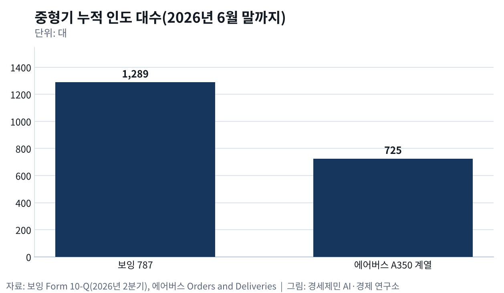
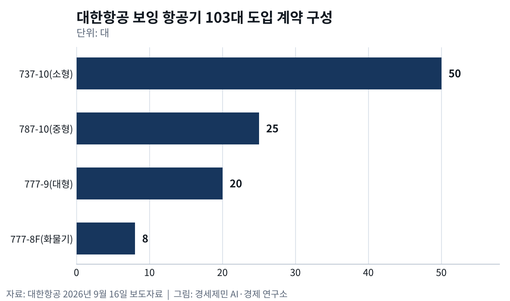

새 여객기 81% 소형기, 직항 대세에 허브는 뭘까
- 에어버스 81%·보잉 77%, 20년 새 여객기 대부분 소형기
- 중형 787 대 A350-900, 대형 777 대 A350-1000
- 대한항공 보잉 103대·에어버스 A350 33대 함께 들여
보잉과 에어버스가 앞으로 20년 동안 세계에 인도할 새 여객기 넷 가운데 셋 이상이 소형기다. 에어버스는 7월 8일 4만2060대 가운데 81%를, 보잉은 7월 17일 4만3625대 가운데 3만3545대(77%)를 통로가 하나인 단일통로기로 내다봤다.
두 회사 모두 두 도시를 바로 잇는 직항이 늘어난다고 본다. 승객이 갈아타는 허브(거점 공항) 인천에는 경고다.
대한항공은 크고 작은 비행기를 두 회사에서 함께 들인다. 9월 16일 보잉 103대 도입을 최종 계약했다. 대형 777-9 20대, 중형 787-10 25대, 777-8F 화물기 8대, 단일통로기 737-10 50대다. 2024년 3월에는 에어버스 A350 33대를 계약했다.
엔진 넷 A380·747 퇴장, 두 회사 모두 엔진 둘로
엔진 넷 달린 초대형기 시대가 끝났다. 에어버스는 2019년 2월 14일 2층 여객기 A380 인도를 2021년에 끝낸다고 발표했다. 당시 최고경영자는 남은 주문이 많지 않아 생산을 이어 갈 근거가 없다고 밝혔다.
최대 고객 에미레이트항공이 A380 주문을 162대에서 123대로 줄이고 엔진 둘 달린 A330-900 40대와 A350-900 30대로 돌렸다. 500석 넘게 싣는 유일한 여객기 A380은 251대로 끝났다.
보잉도 2023년 1월 31일 마지막 747 화물기를 미국 아틀라스항공에 넘기며 1967년부터 1574대를 만든 생산을 끝냈다. 빈자리는 엔진 둘 달린 광동체(통로가 둘인 넓은 동체 여객기)가 채웠다. 두 회사는 이 시장을 중형과 대형으로 나눠 맞붙는다.
중형 787 대 A350-900, 새 직항 경쟁
중형은 보잉 787과 에어버스 A350-900이 맞선다. 787은 길이 57~68m로 2011년 9월 일본 전일본공수(ANA)에 처음 인도됐다. A350-900은 길이 67m로 3년 뒤인 2014년 12월 카타르항공에 처음 인도됐다.
올해 6월 말까지 787은 1289대, A350 계열은 725대가 인도됐다. 먼저 나온 787이 앞서 있다. 두 기종은 새 직항을 열었다. 콴타스는 2018년 3월 787로 퍼스~런던을 이어 호주와 유럽 사이 첫 직항을 띄웠다.
싱가포르항공은 같은 해 10월 A350으로 싱가포르~뉴어크 직항을 열었다. 그래도 항공 분석기관 CAPA가 2016년 집계해 보니 허브를 둘 이상 둔 항공사가 띄운 787 가운데 73%는 허브와 허브 사이를 오갔다.
대형 777 대 A350-1000, 승객 많은 노선 경쟁
대형은 보잉 777과 에어버스 A350-1000이 주문을 다툰다. 제원을 보면 A350-1000은 길이 73.8m로 777-300ER(73.9m)과 비슷하고, 짐과 연료를 가득 실은 최대이륙중량은 27t가량 가볍다.
보잉은 이보다 3m가량 더 긴 777-9(76.7m) 인증 시험을 7월까지 절반쯤 마쳤다며 2027년 첫 인도를 목표로 한다고 밝혔다. 대한항공은 777-9 20대와 A350-1000 20대를 함께 들인다. A350-1000 7대는 지난해 10월 화물기로 바꿨다.
대형기는 승객이 몰리는 노선을 맡는다. 카타르항공은 2018년 2월 A350-1000 첫 노선으로 하루 6회 다니던 도하~런던을 골랐다. 다만 콴타스는 연료통을 늘린 A350-1000으로 2027년 10월부터 시드니~런던을 중간 기착 없이 잇는다고 6월 17일 발표했다.
A321XLR 대 737-10, 바다 건너는 소형기
소형기가 바다를 건너기 시작했다. 에어버스는 2024년 10월 30일 A321XLR 첫 기체를 이베리아항공에 인도했다. 이베리아는 최대 8700km를 나는 이 기종을 그해 11월 마드리드~보스턴 대서양 노선에 투입했다.
보잉 737-10은 5740km를 날고 아직 미국 연방항공청(FAA) 인증 전이다. 대한항공은 12월 23일 A321neo로 인천~히로시마 노선을 새로 연다. 일본 중소 도시를 소형기로 인천에 잇는 노선이다.
갈아탈까 바로 갈까, 답은 운항 횟수
항공사는 언제 허브로 모으고 언제 두 도시를 바로 잇는가. 미국 캘리포니아대 어바인 연구진은 2004년 독점 항공사 한 곳을 놓고 이 문제를 수학 모형으로 풀었다.
두 도시 사이 승객이 적고, 운항비가 비싸고, 승객이 갈아타는 불편보다 잦은 운항을 더 반길수록 항공사는 허브로 모았다. 승객이 많아지면 두 도시를 바로 잇는 직항이 낫다는 결론이다.
소형기가 멀리 날면 이 셈법이 바뀐다. 독일항공우주센터 연구진은 2021년 도시 사이 승객 자료와 항공편 시간표로 장거리 소형기 시장을 따졌다. A321 장거리형으로 승객이 적은 먼 노선에도 더 자주 띄울 수 있다고 봤다.
그동안 너무 멀거나 좌석이 남아 못 열던 직항도 새로 열 수 있다고 봤다. 허브를 거치던 승객이 직항으로 빠질 길이 생긴다. 그래도 허브를 지키는 힘은 운항 횟수다.
미국 캘리포니아대 버클리 연구진은 2005년 비행기를 키우기보다 자주 띄우는 항공사가 승객을 더 모은다고 밝혔다. 운항 횟수가 늘면 어느 순간 승객이 크게 몰린다는 점도 확인했다.
네덜란드·이탈리아 연구진은 2013년 작은 공항이라도 잘 연결된 허브로 가는 비행기 몇 편만 있으면 세계 여러 곳으로 가기 쉬워진다고 분석했다. 작은 도시를 허브에 잇는 비행기가 힘이다.
인천에는 두 흐름이 함께 온다. 승객이 많은 두 도시는 인천을 거치지 않는 직항으로 이어지고 그만큼 인천 환승객이 준다. 승객이 적은 중소 도시는 여전히 허브를 거친다.
인천은 히로시마 같은 중소 도시를 소형기로 더 잇고 자주 띄워 그 승객을 인천에서 장거리기로 갈아태워야 한다. 직항 시대에 허브가 살 길은 운항 횟수다.
※ 이 기사는 AI 프로그램 클로드를 활용해 작성했습니다.



이 기사는 인공지능을 활용해 작성했습니다. 사실관계는 저자가 확인했습니다.
참고문헌
기관 자료
- 대한항공, "대한항공, 보잉 항공기 103대·GE에어로스페이스 엔진 구매 계약 최종 완료", 2026년 9월 16일. https://news.koreanair.com/%eb%8c%80%ed%95%9c%ed%95%ad%ea%b3%b5-%eb%b3%b4%ec%9e%89-%ed%95%ad%ea%b3%b5%ea%b8%b0-103%eb%8c%80%c2%b7ge%ec%97%90%ec%96%b4%eb%a1%9c%ec%8a%a4%ed%8e%98%ec%9d%b4%ec%8a%a4-%ec%97%94%ec%a7%84-%ea%b5%ac/
- 대한항공, "대한항공, 에어버스社와 총 33대 항공기 구매 계약 체결", 2024년 3월 21일. https://news.koreanair.com/%eb%8c%80%ed%95%9c%ed%95%ad%ea%b3%b5-%ec%97%90%ec%96%b4%eb%b2%84%ec%8a%a4%e7%a4%be%ec%99%80-%ec%b4%9d-33%eb%8c%80-%ed%95%ad%ea%b3%b5%ea%b8%b0-%ea%b5%ac%eb%a7%a4-%ea%b3%84%ec%95%bd-%ec%b2%b4%ea%b2%b0/
- 대한항공, "대한항공, 에어버스 최첨단 중대형 항공기 A350 운항 시작", 2025년 1월 26일. https://news.koreanair.com/%EB%8C%80%ED%95%9C%ED%95%AD%EA%B3%B5-%EC%97%90%EC%96%B4%EB%B2%84%EC%8A%A4-%EC%B5%9C%EC%B2%A8%EB%8B%A8-%EC%A4%91%EB%8C%80%ED%98%95-%ED%95%AD%EA%B3%B5%EA%B8%B0-a350-%EC%9A%B4%ED%95%AD-%EC%8B%9C/
- 대한항공, "대한항공, 인천~히로시마 노선 신규 취항… 12월 23일부터 운항 시작", 2026년 8월 24일. https://news.koreanair.com/%EB%8C%80%ED%95%9C%ED%95%AD%EA%B3%B5-%EC%9D%B8%EC%B2%9C%ED%9E%88%EB%A1%9C%EC%8B%9C%EB%A7%88-%EB%85%B8%EC%84%A0-%EC%8B%A0%EA%B7%9C-%EC%B7%A8%ED%95%AD-12%EC%9B%94-23%EC%9D%BC%EB%B6%80%ED%84%B0/
- 에어버스(Airbus), "Korean Air becomes new A350F customer", 2025년 10월 31일. https://www.airbus.com/en/newsroom/press-releases/2025-10-korean-air-becomes-new-a350f-customer
- 에어버스(Airbus), "Airbus forecasts traffic growth driven by urbanisation and increased connectivity made possible by aircraft efficiency", 2026년 7월 8일. https://www.airbus.com/en/newsroom/press-releases/2026-07-airbus-forecasts-traffic-growth-driven-by-urbanisation-and-increased-connectivity-made-possible-by
- 보잉(Boeing), "Boeing: Global Commercial Fleet Will Top 50,000 Airplanes in 20 Years as Passenger Traffic Doubles", 2026년 7월 17일. https://investors.boeing.com/investors/news/press-release-details/2026/Boeing-Global-Commercial-Fleet-Will-Top-50000-Airplanes-in-20-Years-as-Passenger-Traffic-Doubles/default.aspx
- 에어버스(Airbus), "Last delivery of Airbus A380 scheduled for 2021", 2019년 2월 14일(Airframer 전재). https://www.airframer.com/news/release/last-delivery-of-airbus-a380-scheduled-for-2021
- 에어버스(Airbus), 「Airbus A380」 소개, 2026년 10월 9일 조회. https://www.airbus.com/en/products-services/commercial-aircraft/passenger-aircraft/a380
- 보잉(Boeing), "Boeing, Atlas Air Celebrate Delivery of Final 747, an Airplane that Transformed Aviation and Global Air Travel", 2023년 1월 31일. https://boeing.mediaroom.com/2023-01-31-Boeing,-Atlas-Air-Celebrate-Delivery-of-Final-747,-an-Airplane-that-Transformed-Aviation-and-Global-Air-Travel
- 보잉(Boeing), "ANA, Boeing Set Date for First 787 Dreamliner Delivery", 2011년 8월 26일. https://boeing.mediaroom.com/2011-08-26-ANA-Boeing-Set-Date-for-First-787-Dreamliner-Delivery
- 에어버스(Airbus), 「A350 Family Facts and Figures」, 2022년 9월. https://www.airbus.com/sites/g/files/jlcbta136/files/2022-09/airbus-a350-family-facts-and-figures_sept-2022.pdf
- 보잉(Boeing), 「Form 10-Q, 2026년 2분기」, 2026년. https://www.sec.gov/Archives/edgar/data/0000012927/000162828026050038/ba-20260630.htm
- 에어버스(Airbus), 「Orders and Deliveries」(2026년 6월·9월 집계), 2026년 10월 9일 조회. https://www.airbus.com/en/products-services/commercial-aircraft/orders-and-deliveries
- 보잉(Boeing), 「787·777·777X·737 MAX 기술 제원」, 2026년 10월 9일 조회. https://www.boeing.com/commercial/787 , https://www.boeing.com/commercial/777 , https://www.boeing.com/commercial/777x , https://www.boeing.com/commercial/737max
- 에어버스(Airbus), 「A350-900·A350-1000·A321XLR 주요 제원」, 2026년 10월 9일 조회. https://www.aircraft.airbus.com/en/aircraft/a350/a350-900 , https://www.aircraft.airbus.com/en/aircraft/a350/a350-1000 , https://www.aircraft.airbus.com/en/aircraft/a320-family/a321xlr
- 보잉(Boeing), "Certification progress reported on 737 MAX models, 777-9", 2026년 7월. https://www.boeing.com/features/2026/07/certification-progress-reported-737-max-777-9
- 보잉(Boeing), "U.S. FAA certifies new Boeing 737-7 airplane", 2026년 8월 3일. https://boeing.mediaroom.com/2026-08-03-U-S-FAA-certifies-new-Boeing-737-7-airplane
- 콴타스(Qantas), "Qantas starts history-making flight direct to London", 2018년 3월 24일. https://www.qantasnewsroom.com.au/media-releases/qantas-starts-history-making-flight-direct-to-london
- 싱가포르항공(Singapore Airlines), "Singapore Airlines To Launch World's Longest Commercial Flights", 2018년 5월 30일. https://www.singaporeair.com/en_UK/pt/corporate/newsroom/press-release/2018/April-June/ne2018-180530/
- 카타르항공(Qatar Airways), "London is the Launch Destination for Qatar Airways' Airbus A350-1000", 2018년 2월 25일. https://www.qatarairways.com/en/press-releases/2018/february/-london-is-the-launch-destination-for-qatar-airways-airbus-a350-.html
- 콴타스(Qantas), "Australia to the world, non-stop: Qantas to launch history-making flights to London", 2026년 6월 17일. https://www.qantasnewsroom.com.au/media-releases/project-sunrise-route-announcement-toulouse
- 에어버스(Airbus), "Airbus delivers first A321XLR to Iberia", 2024년 10월 30일. https://www.airbus.com/en/newsroom/press-releases/2024-10-airbus-delivers-first-a321xlr-to-iberia
- 이베리아(Iberia), "Iberia Launches the New A321XLR Worldwide", 2024년 11월 13일. https://grupo.iberia.com/pressrelease/details/21272
연구 논문
- Brueckner, J. K., "Network Structure and Airline Scheduling", 『Journal of Industrial Economics』 52(2), 2004년 6월, pp.291-312. https://doi.org/10.1111/j.0022-1821.2004.00227.x
- Wei, W., & Hansen, M., "Impact of aircraft size and seat availability on airlines' demand and market share in duopoly markets", 『Transportation Research Part E』 41(4), 2005년 7월, pp.315-327. https://doi.org/10.1016/j.tre.2004.06.002
- Burghouwt, G., & Redondi, R., "Connectivity in Air Transport Networks: An Assessment of Models and Applications", 『Journal of Transport Economics and Policy』 47(1), 2013년 1월, pp.35-53. https://ideas.repec.org/a/tpe/jtecpo/v47y2013i1p35-53.html
- Grimme, W., Maertens, S., Bingemer, S., & Gelhausen, M. C., "Estimating the market potential for long-haul narrowbody aircraft using origin-destination demand and flight schedules data", 『Transportation Research Procedia』 52(EWGT 2020 학술대회 논문집), 2021년, pp.412-419. https://doi.org/10.1016/j.trpro.2021.01.048
분석 보고
- CAPA, "787 network analysis: Boeing's 'hub-buster' is mostly used by airlines to feed, not bypass, hubs", 2016년 8월 5일. https://centreforaviation.com/analysis/reports/787-network-analysis-boeings-hub-buster-is-mostly-used-by-airlines-to-feed-not-bypass-hubs-293741
언론기사
- Gordon Smith, "Korean Air Seals Deal With Airbus to Replace Long-Haul Jets", Skift, 2024년 3월 21일. https://skift.com/2024/03/21/korean-air-seals-deal-with-airbus/
- "And the winner is London: Project Sunrise to launch October 2027", Australian Aviation, 2026년 6월. https://australianaviation.com.au/2026/06/and-the-winner-is-london-project-sunrise-to-launch-october-2027/
- "Boeing's Path to Max 10 Certification Looks Clear Again", Leeham News, 2026년 10월 6일. https://leehamnews.com/2026/10/06/max-10-certification-unlikely-to-be-significantly-delayed/